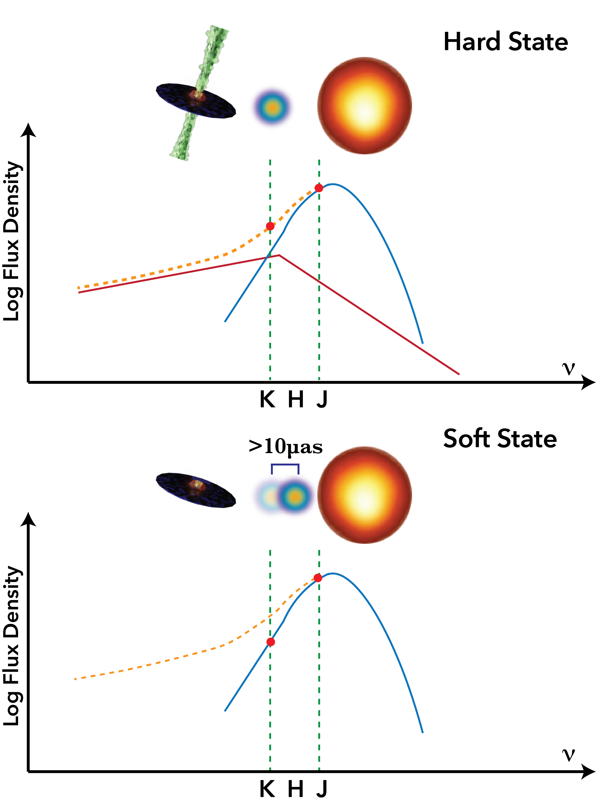
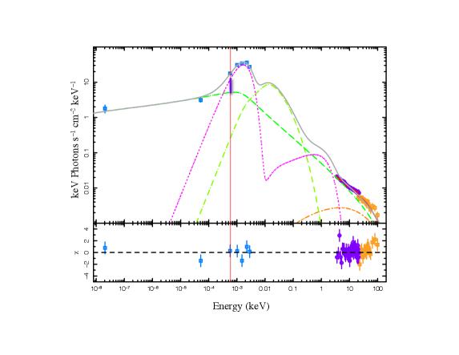
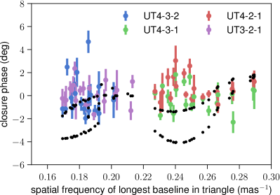
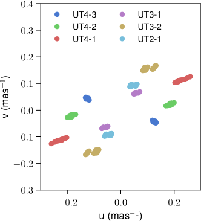

قياس التداخل بالأشعة تحت الحمراء لفصل النفاثات مكانياً وطيفياً في ثنائيات الأشعة السينية
الملخص
يمثّل قياس التداخل بالأشعة تحت الحمراء جبهة جديدة للرصد الأرضي الدقيق، إذ تحقق أجهزة جديدة دقات مكانية بمقياس الملّي ثانية قوسية (mas) للمصادر الخافتة، إلى جانب قياس فلكي من رتبة 10 ميكروثانية قوسية (as). وقد أفضت هذه التقنية بالفعل إلى اختراقات في رصد الثقب الأسود فائق الكتلة في مركز المجرة ونجومه المدارية، وAGN، والكواكب الخارجية، ويمكن توظيفها لدراسة ثنائيات الأشعة السينية (XRBs)، ولا سيما الكوازارات الصغرى. وإضافة إلى تقييد المعلمات المدارية للنظام باستخدام تذبذب المركز الضوئي وفصل القذفات النفاثة المنفصلة مكانياً على مقاييس mas، نقترح أيضاً طريقة جديدة للتمييز بين المكونات المختلفة المساهمة في نطاقات الأشعة تحت الحمراء: قرص التراكم، والنفاثات، والنجم المرافق. نبيّن أن أداة GRAVITY على مقياس تداخل التلسكوب الكبير جداً (VLTI) ينبغي أن تكون قادرة على كشف إزاحة في المركز الضوئي في عدد من المصادر، فاتحةً مساراً جديداً لاستكشاف الوفرة الكبيرة من العابرين المتوقع اكتشافهم في العقد المقبل من مسوحات الراديو لكامل السماء. ونقدّم أيضاً أول رصد إثباتي بالمفهوم باستخدام GRAVITY لعابر من ثنائيات الأشعة السينية منخفضة الكتلة، MAXI J1820+070، بحثاً عن نفاثات ممتدة على مقاييس mas. ونضع أشد القيود حتى الآن، عبر التصوير المباشر، على حجم المنطقة الباعثة في الأشعة تحت الحمراء للنفاثة المدمجة في XRB في الحالة الصلبة.
keywords:
الأجهزة: مقاييس التداخل — الأشعة تحت الحمراء: النجوم — الأشعة السينية: الثنائيات — التراكم، أقراص التراكم، النفاثات1 المقدمة
ظل قياس التداخل بالموجات الراديوية قيد التطوير لعقود، حتى بلغ الدقة البالغة في قياس التداخل ذي خط الأساس الطويل جداً (VLBI). غير أنه عند الانتقال إلى ترددات أعلى، تجعل التأثيرات الجوية تصحيحات الرؤية أكثر صعوبة، وتتطلب عموماً أزمنة تكامل أقصر لأي مصدر معين. وفي نطاقات البصري/الأشعة تحت الحمراء (OIR) لم يكن الجيل السابق من الأجهزة قادراً على تصوير إلا المصادر الشديدة السطوع باستخدام قياس التداخل (مثلاً، مقادير ضوئية في نطاقي V وH تبلغ ؛ Monnier et al. 2007; Che et al. 2011). تشمل الأجهزة الحالية مقياس التداخل البصري الدقيق التابع للبحرية (NPOI) ومصفوفة CHARA، وهما يتألفان من تلسكوبات بفتحات 12cm–2m وبحدود حساسية من رتبة 6–10 قدر (ten Brummelaar et al., 2005; van Belle et al., 2019). وقد دفعت أرصاد مقياس تداخل Keck (مثلاً، Swain et al., 2003; Kishimoto et al., 2011) وVLTI/AMBER (Weigelt et al., 2012) باستخدام تلسكوبات 8–10m هذه الحدود إلى مصادر أخفت بكثير (). ومن المرغوب فيه زيادة الحساسية إلى تدفقات أدنى ودقة طيفية أعلى، لأن قياس التداخل وحده يوفر الدقة اللازمة لفصل المكونات الفردية في OIR لكثير من النظم الفيزيائية الفلكية.
تتمثل أحدث جبهة في قياس التداخل ضمن OIR في تتبع الأهداب والقياس الفلكي الدقيق باستخدام نجم ذي سطوع كافٍ يقع ضمن بضع ثوان قوسية من الهدف المطلوب. ومن دون التصحيحات، تسبب التأثيرات الجوية قدراً مفرطاً من الارتجاج في الأهداب بحيث يتعذر التكامل لفترات تكفي لكشف المصادر الأخفت. وباستخدام الإحالة الطورية يمكن تثبيت أهداب الهدف نشطاً بالنسبة إلى المصدر المرجعي، مما يتيح أزمنة تكامل طويلة بما يكفي لأن يكون الهدف أخفت بكثير من الجسم المرجعي. وتعمل الآن أداة بهذه القدرات على مقياس تداخل التلسكوب الكبير جداً (VLTI)، وهي GRAVITY (Gravity Collaboration et al., 2017a).
GRAVITY أداة تداخلية من الجيل الثاني، شُغّلت على VLTI في 2016. وهي تتيح رصد جسمين (جسم ساطع لتتبع الأهداب ومرجع طوري، وجسم علمي أخفت). عند استخدام GRAVITY مع التلسكوبات المساعدة (ATs، قطرها 1.8m) ونظام البصريات التكيفية NAOMI، يجب أن يكون للجسم المرجعي الطوري الأشد سطوعاً مقدار في الأشعة تحت الحمراء قدره ، ويجب أن يقع الجسم الخافت ضمن 4 ثانية قوسية من الجسم الساطع، لكنه قد يكون خافتاً حتى –13. وعند استخدام GRAVITY مع التلسكوبات الوحدة (UTs؛ قطرها 8m)، يمكن أن يكون الجسم الساطع ، وربما حتى منخفضاً إلى في ظروف جيدة. ويجب أن يقع الجسم الخافت ضمن 2′′، مع مقدار حدّي حالي يقارب (Gravity Collaboration et al., 2017a, 2018b). وتبلغ دقة القياس الفلكي في أفضل الحالات 20 as (Gravity Collaboration et al., 2017a, 2019b)، مع إظهار قياس فلكي تفاضلي طيفي بدقة 2 as لثنائيات الأشعة السينية عالية الكتلة (Waisberg et al., 2017) وAGN (Gravity Collaboration et al., 2018a). وفي حين أن الفصل الصغير بين جسم تتبع الأهداب والجسم المرجعي الطوري يمثل قيداً في إيجاد أهداف مجرية قابلة للرصد، نناقش هنا الحالات العلمية الجديدة الممكنة، ولا سيما عند النظر في الترقيات المخططة التي تسمح بفصل قدره ".
تبلغ دالة انتشار النقطة للتصوير في VLT مقدار mas، ولذلك تتيح الثباتية الممتازة في GRAVITY تحديد الحركات النسبية في الأجسام بدقات أفضل بمقدار مرة من دقة بنيتها. صُممت GRAVITY أساساً لدراسة الحركات المدارية للنجوم أو انبعاث التوهجات في المجال الثقالي الشديد للثقب الأسود فائق الكتلة Sgr A∗ (Gravity Collaboration et al., 2020)، وقدمت أدق مسافة إلى مركز المجرة (Gravity Collaboration et al., 2018b, c, 2019b)، وكذلك أول كشف لكوكب خارجي بواسطة قياس التداخل في OIR (Gravity Collaboration et al., 2019a). غير أن GRAVITY تمتلك أيضاً القدرة على إحداث تحول جذري في دراسات ثنائيات الأشعة السينية (XRB)، وقد استُخدمت بالفعل لدراسة حجم وبنية وأطياف ثنائيتين مجريتين عاليتَي الكتلة في الأشعة السينية، GX 301–2 وSS 433 (Waisberg et al., 2017; Gravity Collaboration et al., 2017b; Waisberg et al., 2019a). ومع أن XRBs منخفضة الكتلة صغيرة عموماً أكثر من أن تُفصل مكانياً (بالنسبة إلى بعدها) على مقاييس mas باستخدام نطاق IR، فإن دقة قياس فلكي في IR قدرها as قد تمكّن أول كشف مباشر للمساهمات الفردية في طيف IR، فضلاً عن طريقة مستقلة للحصول على المعلمات المدارية للنظام.
نقترح في هذه الورقة دراسة جدوى لكيفية استغلال قياس التداخل في IR، باستخدام GRAVITY على وجه الخصوص، لفصل مكونات الانبعاث في XRBs ومن ثم تقييد فيزياء التراكم/التدفق الخارج. في القسم 2 نصف الأسئلة العلمية التي يمكن لقياس التداخل في IR أن يساعد على معالجتها في XRBs، ولا سيما الكوازارات الصغرى العابرة. وفي القسم 3 نستكشف الجدوى باستخدام عدة مصادر نموذجية دليلاً، خصوصاً لرصد الأهداف الخافتة خارج المحور. وفي القسم 4 نقدم أول رصد تداخلي إثباتي في IR على مقياس mas لثنائية أشعة سينية مجرية عابرة، MAXI J1820+070، باستخدام GRAVITY. وأخيراً، في القسم 5 نلخص ونقدم بعض التنبؤات للعقد القادم من كشوف العابرين في كامل السماء.
2 الدافع العلمي
2.1 الفصل المكاني للنفاثات في XRBs
كشفت دراسات VLBI للنفاثات في AGN القريبة مثل M87 عن هندسة عمود وغلاف، كما تتنبأ النماذج النظرية (Perlman et al., 2011; Walker et al., 2018)، وكذلك عن ملف تضييق النفاثة (مثلاً Asada & Nakamura, 2012). ويمكن استخدام مثل هذه الصور لتقييد معادلات توازن القوى (أي الضغط الداخلي مقابل الضغط الخارجي)، في حين يوفر التغير الزمني معلومات عن الاضطراب داخل الجريان. والواقع أن M87 قريب وكبير إلى حد أن تلسكوب أفق الحدث (VLBI عالمي عند 1 mm مع phased-ALMA في جوهره) استطاع تصوير ظل الثقب الأسود مباشرة (مثلاً Event Horizon Telescope Collaboration et al., 2019).
مع أن XRBs المجرية ذات الثقوب السوداء أقرب بكثير من AGN، فإنها عادة أصغر بملايين إلى مليارات المرات، ولذلك يمثل التصوير المباشر تحدياً، كما أن فصل ظل الثقب الأسود أو قرص التراكم الداخلي يتجاوز كثيراً قدرات المرافق الحالية. غير أنه مع ظهور GRAVITY على VLTI تبرز إمكانية مثيرة لفصل النفاثات المتوسعة على مقياس mas مباشرة في اندلاع XRB عابر، وكذلك تفكيك مكونات التراكم طيفياً بعضها عن بعض وعن النجم المرافق. وتكمن ميزة XRBs مقارنة بـ AGN في إمكان رصد أزمنة ديناميكية أكثر بملايين المرات، ومن ثم الحصول على قيود على فيزياء القرص الداخلي على مقاييس زمنية نسبية أطول بكثير. ويوفر التصوير المباشر أفضل الرؤى في مورفولوجية النفاثات وطاقتها وتفاعلاتها. ولأن أحد الأسئلة الملحة حالياً في نمذجة جريانات التراكم يتمحور حول كيفية ومكان إكساب الجسيمات الطاقة (انظر، مثلاً، Romero et al., 2017; Ball et al., 2018)، فإن الوعد بتحديد اللحظة التي تنطلق فيها نفاثات XRBs ثم تبدأ بتسريع الجسيمات عالية الطاقة يجعلها مختبرات اختبار بالغة القيمة لتقييد النظرية.
2.1.1 النفاثات المدمجة والقذفات المنفصلة
توجد XRBs كمصادر مستمرة (مع مرافقات عالية الكتلة غالباً؛ HMXB) وعابرة (مع مرافقات منخفضة الكتلة؛ LMXB)، وتشهد الأخيرة دورات اندلاع دورية. وداخل اندلاع واحد نشهد انطلاق النفاثات وخمودها، وفي بعض المصادر يتكرر ذلك على دورة زمنية من بضع سنوات (مثلاً Corbel et al., 2013). وحتى الآن ركز التصوير المباشر على تقنيات VLBI الراديوية بسبب الدقة المكانية الاستثنائية، غير أنه لم تُفصل حتى الآن باستخدام VLBI الراديوي إلا ثلاث نفاثات مدمجة مستقرة مرتبطة بـ‘الحالة الصلبة’ التي يهيمن عليها الانبعاث غير الحراري: GRS 1915+105 (Dhawan et al., 2000)، وCyg X-1 (Stirling et al., 2001)، وMAXI J1836-194 (Russell et al., 2015). غير أن النفاثات أثناء الانتقالات بين الحالات إلى ‘الحالة الناعمة’ التي يهيمن عليها الانبعاث الحراري/القرص تتحول تحولاً كبيراً، وتمكنت أعداد متزايدة من دراسات VLBI الراديوية من فصل القذفات المنفصلة وتتبع تطورها على مقاييس mas (مثلاً Mirabel & Rodríguez, 1994; Hjellming & Rupen, 1995; Tingay et al., 1995; Fender et al., 1999; Mioduszewski et al., 2001; Miller-Jones et al., 2011, 2019; Brocksopp et al., 2013; Rushton et al., 2017).
تُصدر النفاثات المدمجة المرئية في الحالة الصلبة أيضاً انبعاثاً سنكروترونياً في IR، لكنه ينشأ من منطقة قريبة جداً من الثقب الأسود بحيث لا يمكن فصلها مباشرة (مثلاً Russell et al., 2006; Gandhi et al., 2011; Buxton et al., 2012). وأثناء انتقالات الحالات، تصدر القذفات النفاثة المنفصلة سنكروتروناً رقيقاً بصرياً من الراديو إلى IR، بحيث يُتوقع عموماً أن يكون تدفق IR أخفت من الراديو (مع أنظر GRS 1915+105؛ Fender et al. 1997; Eikenberry et al. 1998). وعلى الرغم من هذا الخفوت، قد يكون ممكناً، مع ظهور قدرات تتبع الأهداب والإحالة الطورية في VLTI عبر تجربة GRAVITY، تصوير نشاط نفاثات XRBs في IR على نحو مماثل لما أُنجز باستخدام VLBI الراديوي.
2.1.2 ادعاءات سابقة بوجود نفاثات ممتدة في OIR
كانت هناك في الواقع ادعاءات بكشف هامشي في IR لنفاثة مدمجة قدرها 0.2 ثانية قوسية في المصدر GRS 1915+105 (Sams et al., 1996)، لكن ذلك لم تؤكده كشوف لاحقة قط. وحديثاً، فُصلت مكانياً باستخدام GRAVITY خطوط انبعاث IR من البلازما في نفاثات XRB المجري الغريب SS 433 (Gravity Collaboration et al., 2017b). وعلى مقاييس أكبر، كادت نفاثات XTE J1550–564 الممتدة والمفصولة على مقاييس ثانية قوسية–دقيقة قوسية، والمكشوفة عند ترددات الراديو والأشعة السينية، أن تُكشف بواسطة VLT عند الأطوال الموجية البصرية، لكنها لم تُكشف تماماً (Corbel et al., 2002).
2.1.3 قابلية الكشف باستخدام GRAVITY: المقاييس المكانية
نظراً إلى قدرة GRAVITY على تصوير بنى على مقاييس مكانية قدرها –50 mas (وهي تقابل، مثلاً، 0.3–20 AU لمصدر عند 3 kpc؛ وحتى 60 AU عند 8 kpc)، فقد باتت السمات العابرة مثل القذفات أو مناطق تفاعل النفاثة مع ISM قابلة للكشف الآن. وعلى وجه التحديد، لا يعود اللب نشطاً بعد الانتقال إلى الحالة الناعمة، لكن القذفات الباليستية تظل متحركة. وبناءً على أرصاد VLBI الراديوية، نتوقع أن تُفصل هذه القذفات الساطعة مكانياً باستخدام GRAVITY، بحركات مقدارها s- mas/يوم (مع ملاحظة أن الحركات البالغة السرعة بمقدار 100 mas/يوم قد تؤدي إلى حركة/طمس داخل رصد GRAVITY نفسه، تبعاً لأزمنة التكامل).
تكون النفاثات على مقياس mas المرئية باستخدام VLBI الراديوي عادة قذفات منفصلة غير مفصولة هي ذاتها حتى mas (انظر الجدول 1 في Miller-Jones et al., 2006)، لذلك لا نتوقع أن تُفرغ مكانياً. ومن ثم يمكن استخدام نموذج مصدر ثنائي في مستوى uv (لب XRB وقذفة نفاثة، انظر القسم 4.1 والشكل 3) لتحديد القذفات المفصولة مكانياً على مقاييس 1–50 mas. وفي حالة مصدر قريب ذي قذفات عالية السرعة، يمكن أن تتحرك القذفات على مقياس mas ضمن مقاييس زمنية قصيرة كزمن التعريض. وبالنسبة إلى هذه الحالات، إذا كانت الحركة قابلة للمقارنة بزمن التكامل أو أطول منه (عشرات الدقائق)، فستكون قابلة للكشف. ومن الأمثلة الجيدة على ذلك كشف النجم S2 المفصول من Sgr A∗، إذ كان المقياس الزمني الديناميكي أقصر من زمن التكامل، ومع ذلك نجح ملاءمة نموذج uv (Gravity Collaboration et al., 2018c, 2019b, 2020).
2.1.4 قابلية الكشف باستخدام GRAVITY: التدفقات
بالنسبة إلى XRB نموذجي، تكون كثافات التدفق الراديوي للقذفات المنفصلة على مقاييس الحجم 1–50 mas التي نستطيع سبرها باستخدام GRAVITY من رتبة 10–500 mJy (عند 15 GHz، مثلاً Fender et al., 2009; Miller-Jones et al., 2019). وبافتراض طيف رقيق بصرياً قياسي ( إلى )، يُتوقع لبٌّ بمقدار –12 وقذفة منفصلة بمقدار –16، ما يعني أن GRAVITY يمكن أن يكشف المكونين ويفصلهما بدرجة معنوية. ولأن مثل هذه القذفات المنفصلة ستكون على الأرجح أخفت بعدة مقادير من النفاثة المدمجة، ومن قرص التراكم غير المفصول و(في بعض الحالات) النجم، فإن القذفات المنفصلة على مقياس mas عند هذه التدفقات لم تكن لتُلاحظ من قبل في أي بيانات IR.
2.1.5 قابلية الكشف باستخدام GRAVITY: نفاثات وجيزة وأشد سطوعاً
قد توجد أيضاً قذفات منفصلة ساطعة في IR تبلغ عشرات mJy (قدر K10)، لكنها لا تدوم إلا وجيزاً قرب بداية الانتقال من الحالة الصلبة إلى الناعمة، قبل أن تخفت لاحقاً في الراديو إلى تدفق مماثل أو أخفت. فعلى سبيل المثال، كانت توهجات النفاثة غير المفصولة مكانياً في GRS 1915+105 ذات كثافة تدفق مماثلة (بوحدة Jy) في IR والراديو، مع حدوث الراديو بعد IR بدقائق (Fender et al., 1997; Mirabel et al., 1998). واستمرت توهجات IR والراديو معاً دقيقة، مما يشير بقوة إلى هيمنة الفواقد الأديباتية. غير أنه أثناء أحدث اندلاع لـ V404 Cyg، وجد Tetarenko et al. (2017) أن توهجات تحت-ملّيمترية قدرها 7 Jy استمرت من عشرات الدقائق إلى ساعة عند 666 GHz أعقبتها توهجات مقدارها فقط Jy في نطاقات الراديو. وقد تكون لمثل هذه التوهجات نظائر عابرة وجيزة جداً في IR تبلغ بضع مئات mJy (K 9 قدر) أو أكثر، وتستمر على مقاييس زمنية من دقائق إلى عشرات الدقائق. وحتى الآن لم يُفصل أي توهج من هذا النوع في IR في عابر ثقب أسود نموذجي (يُعد GRS 1915+105 حالة شاذة)، لكن ربما فاتها الرصد بسبب انخفاض معدل أخذ العينات أو قصر أزمنة التكامل. ومن المرجح أن تُصدر مثل هذه القذفات بين K خلال الأيام/الأسبوع اللاحق مباشرة للانطلاق. وفي نظام واحد، كُشف توهج في IR بلغ ذروته عند مقدار واستمر أربعة أيام أثناء انتقالات الحالة، وربما كان أسطع على مقاييس زمنية قدرها يوم (Buxton & Bailyn, 2004; Russell et al., 2020). وستكون مثل هذه التوهجات، على مقاييس زمنية من ساعة إلى يوم، إذا وُجدت، قابلة للكشف والفصل مكانياً إذا امتلكت حركات نموذجية قدرها s- mas/يوم. غير أننا نلاحظ أنه بالنسبة إلى التوهجات السريعة جداً التي يتغير تدفقها على مقاييس زمنية تقارن برصد واحد، قد يؤدي ذلك إلى آثار اصطناعية في الصورة. وبناءً عليه، سيحول تغير التدفق على الأرجح دون كل عمليات ملاءمة النماذج الثنائية باستثناء أبسطها في هذه الحالات.
2.1.6 تبعات الكشف
سيتيح كشف واضح تقييد موضع نفاثات IR وسرعتها وحجمها/مورفولوجيتها وتطورها. وإلى جانب أرصاد VLBI الراديوية، سيقدم كشف IR أيضاً معلومات عن توزع طاقة الجسيمات المشعة في القذفات المنفصلة على مقياس mas. وستكون أي كشوف ساطعة مبكرة في IR حاسمة لتقييد زمن إطلاق النفاثات، للمقارنة مع بصمات توقيت الأشعة السينية المرتبطة بهذا الإطلاق (انظر، مثلاً، Miller-Jones et al., 2012)، لأنها أقل تأثراً بتأثيرات العمق البصري. وأخيراً، عندما تعيد النفاثة المستقرة تأسيس نفسها قبل انتهاء الاندلاع، يمكن استخدام GRAVITY لاستقصاء التغيرات في النفاثة الداخلية وحركة أي بقع ساخنة ناتجة عن التفاعل.
2.2 التفكيك الطيفي باستخدام قياس التداخل
على الرغم من صعوبته، يوفر قياس التداخل في IR بعداً جديداً مثيراً للدراسات متعددة الأطوال الموجية المستخدمة حالياً لتفكيك الفيزياء التي تقود التراكم والتدفقات الخارجة.
تطور فهمنا لفيزياء التراكم في XRB تطوراً كبيراً خلال العقود الأخيرة، ويعود ذلك أساساً إلى مراقبة دورات اندلاع كاملة في نطاقات الأشعة السينية عبر أدوات مُحفَّزة مثل Rossi X-ray Timing Explorer (RXTE)، وSWIFT، وحديثاً NICER (مثلاً Belloni et al., 2005; Muñoz-Darias et al., 2011; Motta et al., 2017; Stevens et al., 2018). وقد أدت هذه الأرصاد إلى فهم أعمق لاقتران القرص/النفاثة الذي يقود حالات التراكم المنفصلة (مثلاً، McClintock & Remillard, 2006; Belloni, 2010)، وهي أوضح ما تكون في XRBs ذات الثقوب السوداء، وهي محور هذا العمل الرئيس. وقد انتقلت الجبهة الآن إلى نطاقات التردد الأدنى، إذ كشف التحفيز المتزامن لأرصاد الراديو وOIR مع الأشعة السينية تطوراً موازياً في التفاعل بين التدفق التراكمي الداخل في قرص التراكم، والتدفقات النفاثة الخارجة، وأحياناً النجم المرافق.
وتوفر نطاقات OIR على وجه الخصوص مختبراً جديداً قيّماً لكثير من جوانب فيزياء التراكم في XRBs، إذ يمكن أن تتألف من مساهمات متعددة من قرص التراكم والنفاثات والنجم، ويمكن للأول منها أن يبدّل الهيمنة أثناء تغيرات الحالة. فعلى سبيل المثال، في الحالة الناعمة يمكن للمناطق الخارجية من جريان التراكم أن تعيد إشعاع الانبعاث القادم من المناطق الداخلية في نطاقات OIR، وكذلك يمكن للنجم المرافق نفسه أن يفعل ذلك (مثلاً O’Brien et al., 2002; Hynes, 2005; Migliari et al., 2007). وفي الحالة الصلبة أصبح راسخاً الآن أن الانبعاث السنكروتروني من النفاثات يمتد إلى نطاقات OIR (مثلاً Corbel & Fender, 2002; Russell et al., 2006, 2010; Buxton et al., 2012; Saikia et al., 2019)، إما امتداداً للطيف المسطح/المقلوب والممتص ذاتياً، أو بعد كسر الامتصاص الذاتي السنكروتروني كقانون قدرة رقيق بصرياً. وقد فُصل الكسر نفسه صراحة في بعض الأرصاد (مثلاً Migliari et al., 2006; Gandhi et al., 2011; Russell et al., 2013)، وتظهر حملات حديثة متزامنة عريضة النطاق لـ XRBs في الاندلاع أن الكسر يتحرك ديناميكياً صعوداً وهبوطاً في التردد عبر النطاق (Russell et al. 2014، Russell وآخرون، مقدَّم).
أصبح فهم مساهمة النفاثات في IR، ولا سيما ما إذا كان IR فوق الكسر أو تحته، أو كيف يتطور الكسر، محوراً رئيساً في دراسات XRB لأنه يضع قيوداً قوية على هندسة النفاثة وديناميكيتها وطاقتها. فعلى سبيل المثال، كشفت دراسات تغير متعددة الأطوال الموجية حديثة عن مقياس حجم مميز لهذا الكسر (Gandhi et al., 2017; Paice et al., 2019)، وكذلك عن تغير قوي جداً من IR القريب إلى IR المتوسط صادر عن النفاثات المدمجة (Gandhi et al., 2011; Baglio et al., 2018; Vincentelli et al., 2018; Malzac et al., 2018). وبالمثل، تكشف أول تذبذبات شبه دورية في IR على الإطلاق (QPOs) مع توافقية لتردد QPO في الأشعة السينية (Kalamkar et al., 2016) عن الاقتران الوثيق بين النفاثة والقرص. وإذا أمكن تقييد الميل الطيفي بعد الكسر، فإن ذلك يساعد أيضاً على تحديد خواص تسريع الجسيمات، ومع الحدود المستمدة من الأشعة السينية وأشعة ، القدرة الإشعاعية القصوى للنفاثات (انظر، مثلاً Laurent et al., 2011; Corbel et al., 2012; Zdziarski et al., 2014; Rodriguez et al., 2015; Zanin et al., 2016; Espinasse et al., 2020). غير أن الدليل الواضح على وجود مساهمات متعددة في OIR (انظر، مثلاً Homan et al., 2005; Buxton et al., 2012; Baglio et al., 2018) يمكن أن يجعل تحديد مساهمة النفاثة في OIR أمراً صعباً.
لذلك فإن عزل مساهمة النفاثة في طيف OIR يمثل معلماً جديداً رئيساً لفهم فيزياء نفاثات XRB عموماً، وقياس ميزانيات قدرتها الكلية (Corbel et al., 2002; Gallo et al., 2005; Abeysekara et al., 2018). وإضافة إلى ذلك، وبسبب تزايد الأدلة على أن فيزياء التراكم في XRBs وAGN تتدرج بصورة قابلة للتنبؤ مع الكتلة (Merloni et al., 2003; Falcke et al., 2004; McHardy et al., 2006; Plotkin et al., 2012; Koljonen et al., 2015; Connors et al., 2017)، فإن القيود المستخلصة من دراسات IR لـ XRBs ستلقي ضوءاً على قضايا أوسع نطاقاً في تطور المجرات، مثل الفيزياء التي تحكم إطلاق النفاثات وقدرتها، وفي النهاية الطاقة المحررة في البيئة.
3 دراسة جدوى لتطبيق جديد لقياس التداخل بالأشعة تحت الحمراء على XRBs
بما أن XRBs النموذجية تمتلك فواصل ثنائية تقع في نطاق 1–100 as، فإنها لا تُفصل مباشرة باستخدام VLTI، لكن ينبغي أن تكون حركة النظام قابلة للكشف. وأبسط تطبيقات VLTI على XRBs، وربما أحد أهمها، هو البحث عن تذبذب في موضع مركز الضوء، يمكن استخدامه لتقييد دالة الكتلة للنظام. فكثير من الأنظمة باتت لها فترات مدارية مقاسة بدقة، إلا أن كتلة الجسم المدمج و/أو النجم المرافق، عموماً، لا تزال ضعيفة التقييد. وبما أن الفصل المداري، حيث إن هو الفترة المدارية، يمكننا إذن حل كتلة النظام الكلية بتحديدات دقيقة لـ و.
بالنسبة إلى الأجسام التي تمتلك عدة نجوم مرجعية جيدة في الحقل، يمكن استخدام VLTI من حيث المبدأ لزيادة تقييد اتجاه النظام (إسقاطاً على السماء) وميله. وسيعتمد مقدار التذبذب المداري المقاس، في الأنظمة ذات الميل غير الصفري، على الزاوية بين المستوى المداري لـ XRB والنجم المرجعي. ومن خلال قياس التذبذب باستخدام عدد من النجوم المرجعية عند زوايا مختلفة من XRB، يمكن اشتقاق حل لاتجاه القرص واللامركزية الظاهرية على مستوى السماء. وفي المدارات اللامركزية تتغير السرعات من الحضيض إلى الأوج، لكن مدارات معظم XRBs (على الأقل ثنائيات الأشعة السينية منخفضة الكتلة ذات فيض فص روش) دائرية، وفي جميع الحالات يمكن أيضاً تقييد زاوية ميل النظام. وإذا كان نوع النجم المرافق وكتلته معروفين، كما هي الحال في المصادر ذات دالة كتلة مقاسة في السكون، فيمكن توصيف المعلمات الفيزيائية للنظام توصيفاً كاملاً باستخدام هذا النهج.
إذا أمكن تقييد كل من اتجاه المستوى المداري والميل، فهناك اختبار آخر مثير للاهتمام يتمثل في مقارنتهما بالاتجاه المرصود للنفاثات الراديوية (وهو معروف عموماً جيداً لمعظم المصادر المرشحة الرئيسة التي ننظر فيها في هذه الورقة). وقد يساعد مثل هذا الاختبار على تحديد مزيد من الأنظمة ذات نفاثات شديدة سوء المحاذاة مشابهة لـ‘الميكروبلازار’ V4641 Sgr (Hjellming et al., 2000; Orosz et al., 2001; Maccarone, 2002). ومن شأن وجود أعداد كبيرة من النفاثات سيئة المحاذاة أن يساعد على تقييد مدى اصطفاف محاور النفاثات مع الثقب الأسود أكثر من القرص الخارجي، كما تنبأ به Rees (1978) وأعيد إنتاجه عددياً الآن (مثلاً Liska et al., 2018)، وأن يتيح دراسة المقاييس الزمنية التي يمكن لتأثير Bardeen-Petterson (Bardeen & Petterson, 1975) أن يعيد النفاثات خلالها إلى الاصطفاف.
3.1 إزاحة المركز الضوئي وقائمة الأهداف المحتملة
الكشف الأصعب، وربما الأكثر إثارة بعد الأثر المداري، سيكون إزاحة في مركز الصورة بوصفها دالة لحالة التراكم، مدفوعة بتزايد وتضاؤل المكونات الثلاثة الرئيسة للنظام في نطاق IR. وسيكون فهم الفترة المدارية، عبر تقنية التذبذب أو بغيرها، خطوة أولى ضرورية تسمح بمقارنة المصدر عند الطور المداري نفسه في حالات مختلفة، وربما بجمع صور من عدة مدارات. ويمكن رؤية مخطط لكيفية عمل هذه التقنية لتحديد مساهمة النفاثة في الشكل 1. فإذا رُصد النظام عند الطور المداري نفسه أثناء الحالتين الصلبة والناعمة على التوالي، وكان الفصل الثنائي كبيراً بما يكفي، فينبغي أن تكون إزاحة موضع المركز الضوئي قابلة للكشف في عدد قليل من الأنظمة باستخدام GRAVITY. وإذا كان يُعتقد أن مساهمة مهمة في انبعاث IR تأتي من تشعيع النجم، فإن هذه التقنية، إلى جانب النمذجة الطيفية، ستساعد أيضاً على كسر التغاير بين ذلك وبين القرص/النفاثة، إذا أُجريت مقارنات بين تغيرات الحالة.

بالنسبة إلى XRBs عالية ومنخفضة الكتلة على حد سواء، ينبغي أن يكون القياس الفلكي بمواصفات GRAVITY الحالية على VLTI ممكناً إذا كان للهدف وكان نجم آخر بمقدار يقع ضمن 2 ثانية قوسية من الهدف، أو بالعكس (هدف أسطع ونجم مرجعي أخفت). وبالنسبة إلى اهتماماتنا الخاصة، تُفضَّل LMXBs العابرة (أو التوهجات الساطعة في LMXBs المستمرة)، لكننا نقدم في الجدول 1 قائمة بجميع أفضل المصادر المعروفة التي ستكون مرشحات جيدة استناداً إلى أفضل التقديرات المعروفة للمسافة والفترة المدارية وكتل المكونات من الأدبيات لحساب الفصل المداري. وانطلاقاً من 40 XRB ذات كشوف راديوية (أي دليل على وجود نفاثات)، نجد 15 لها فواصل مدارية ظاهرية على السماء as (بترتيب تنازلي لـ ). ونضمّن مصادر تقع شمالاً أكثر من اللازم بالنسبة إلى VLT مثل ثنائية الأشعة السينية عالية الكتلة (HMXB) Cyg X–1، لأنها جسم معياري ذو معلمات فيزيائية محكمة التقييد قد يكون مفيداً لأدوات قياس التداخل المستقبلية (على مقياس تداخل شمالي مثل Large Binocular Telescope وCHARA Michelson Array وMagdalena Ridge Observatory Interferometer (MROI)؛ Angel et al., 1998; ten Brummelaar et al., 2005; Buscher et al., 2013; Gies et al., 2019).
هذه في معظمها LMXBs (بما في ذلك مصادر الثقوب السوداء والنجوم النيوترونية) وكذلك بعض HMXBs ذات الانبعاث الراديوي. ونعدها أفضل الأهداف الحالية لمحاولات VLTI باستخدام GRAVITY (باستثناء ثلاثة مصادر تقع شمالاً أكثر من اللازم، وتُعرض بالمائل في الجدول)؛ ولا نضمّن الأنظمة الأخرى في الجدول لأنها تمتلك فواصل مدارية ظاهرية أصغر على مستوى السماء، وهي أشد صعوبة بالنسبة إلى GRAVITY. وتُدرج أيضاً المقادير المرصودة (غير المصححة للاحمرار) في نطاق ، كما يُدرج عدد نجوم الواقعة ضمن 40′′ من ثنائية الأشعة السينية، كما في فهرس 2MASS. والسبب في أن هذه القائمة تمتد إلى ما يتجاوز قدرات تشكيل الحزمة الحالية في GRAVITY هو الحساسية المحسنة المقترحة ومجال الرؤية الموسع لترقية GRAVITY+ محتملة (قيد التحضير)، التي عُرضت في مؤتمر “التلسكوب الكبير جداً في 2030”، ESO Garching، يونيو 17-20، 2019. وتمتلك جميع هذه الأجسام أيضاً كثافات تدفق راديوية (غير معروضة) يمكن استخدامها لاستقراء تقدير من الدرجة الأولى للتدفق المتوقع في IR من النفاثات. وفي بعض الحالات قُدّرت مساهمة النفاثة في انبعاث IR ضمن نطاق في الحالة الصلبة؛ وبالنسبة إلى هذه الحالات نقدّر إزاحة طور المركز الضوئي بين حالتي تشغيل النفاثة وإطفائها (إذا كان النجم هو المهيمن بدلاً من ذلك). أما إذا كانت الإزاحة بدلاً من ذلك من النفاثة إلى قرص التراكم عبر الانتقال، فلن تكون هناك إزاحة طور في XRB أثناء مثل هذا الانتقال (وهذا على الأرجح هو الحال بالنسبة إلى LMXBs ذات المرافقين الأخفت، مثل GX 339–4 وXTE J1550–564 وCen X–4)، ومن ثم فإن إزاحة الطور المحسوبة من النسبة (انظر أدناه) تمثل حداً أعلى في هذه الأنظمة. غير أن النجم في كثير من المصادر في الجدول 1 كبير وأسطع من جريان التراكم (أو ذو سطوع مقارن له) (GX 301–2، CI CAM، Cyg X–1، SS 433، GRS 1915+105، V4641 Sgr وGRO J1655–40 كما يوضح الشكل 1؛ مثلاً Kaper et al., 1995; Miroshnichenko et al., 2002; Migliari et al., 2007; Hillwig & Gies, 2008; van Oers et al., 2010; Rahoui et al., 2011; MacDonald et al., 2014; Russell & Shahbaz, 2014)، ولذلك تُتوقع إزاحة طور.
توجد حالياً ستة أنظمة معروفة على الأقل ذات فواصل مدارية as، وهو ما سيعطي كشفاً بمقدار باستخدام GRAVITY لإزاحة قياس فلكي عبر الفترة المدارية. وتعتمد هذه الإزاحة أيضاً على نسبة الكتلة؛ ففي الأنظمة التي تكون فيها كتلة الثقب الأسود أكبر بكثير من كتلة المرافق، يمكن أن يكون التذبذب المداري للمرافق كبيراً حتى ضعف الفصل المداري. ومعظم الفترات المدارية للمصادر في الجدول 1 تمتد من أيام إلى أسابيع. أما الكواكب الخارجية، ففتراتها بالمقارنة من رتبة سنوات، ولذلك تُدخل انجرافات الأجهزة والنظاميات على الإطار الزمني الأطول أخطاء قياس فلكي إضافية غير ذات صلة بالكوازارات الصغرى.
للأسف، لا يملك أي من الأهداف في الجدول 1 نجوماً قريبة معروفة ضمن 2′′ في 2MASS، وأقربها هو GRS 1915+105 مع نجم يبعد عن الهدف. غير أن نجماً خافتاً قريباً من XRB الأشد سطوعاً لن يكون قابلاً للكشف بسهولة في مسح 2MASS، ولذلك فمن الممكن أن تكون بعض النجوم القريبة قد فاتت 2MASS. كما فحصنا صوراً أعلى دقة من مسوحات VISTA (Minniti et al., 2010, بما في ذلك VVV وVHS) بحثاً عن نجوم قريبة. وإذا سمحت القدرات خارج المحور بنجم مرجعي طوري ضمن –40 ثانية قوسية (كما تقترح ورقة بيضاء عن GRAVITY+؛ تعاون Gravity وآخرون، قيد التحضير)، فإن ذلك يزيد الجدوى بدرجة كبيرة. وتمتلك معظم الأهداف عدة نجوم ساطعة (حتى 17) من نوع 2MASS ضمن (الجدول 1). ويمتلك GX 301–2 وCI Cam أوسع فواصل مدارية زاوية، لكن النفاثات في كلا النظامين لا تزداد سطوعاً قط إلى مستوى تدفق في IR مقارن بتدفق النجم المرافق. أما بعض المصادر الأخرى فتمتلك نفاثات ساطعة نسبياً، ونبحثها بمزيد من التفصيل أدناه.
| Source2 | BH/NS3 | K mag | ()4 | stars5 within 40′′ | Refs | ||
| GX 301–2 (BP Cru) | NS | 5.7 | 3 stars, –10.5 | 1–2 | – | – | |
| CI Cam | ? | 4.1–4.7 | 1 star, | 3 | – | – | |
| Cyg X–1 | BH | 6.5 | 1 star, | 4 | 0.006 | ||
| SS 433 | BH? | 8.2 | 0 stars | 5–6 | – | – | |
| V404 Cyg | BH | 7.7–12.5 | 4 stars, –11.8 | 7 | |||
| GRS 1915+105 | BH | 11.4–13.5 | 6 stars, –12.0 | 8 | 0.05–0.2 | ||
| Flaring state | |||||||
| GX 13+1 | NS | 11.9–12.6 | 17 stars, –12.0 | 9–10 | – | – | |
| Cir X–1 | NS | 7.2–11.9 | 10 stars, –11.9 | 11–14 | – | – | |
| GRO J1655–40 | BH | 11.0–13.3 | 10 stars, –12.0 | 15–16 | 0.25 | ||
| A0620–00 | BH | 9.9–14.5 | 0 stars | 17–18 | – | – | |
| Cen X–4 | NS | –14.8 | 1 star, | 19–21 | – | – | |
| V4641 Sgr | BH | 12.7–13.7 | 4 stars, –10.9 | 22–23 | |||
| XTE J1550–564 | BH | 13.0–17.4 | 7 stars, –12.0 | 24 | 0.9 | ||
| GRO J1719-24 | BH | –18.3 | 4 stars, –11.9 | 25–26 | – | – | |
| MAXI J1820+070 | BH | 9.5–15.1 | 1 star, | 27,28 |
1لا ندرج ثنائيات أشعة في هذا الجدول، إذ لا يُعتقد أن لها نفاثات ممتدة. 2المصادر بالخط العريض رُصدت باستخدام GRAVITY على VLTI؛ والمصادر بالخط المائل تقع شمالاً أكثر من اللازم بالنسبة إلى VLTI (الميل ). 3BH = ثقب أسود؛ NS = نجم نيوتروني. 4نُشرت أخطاء القيم المقدرة للفصل المداري من الأخطاء في ، و، و، و (إذا لم تكن كتلة النجم النيوتروني معروفة نعتمد ). وبالنسبة إلى GRO J1655–40 تُعطى قيمة لمسافة kpc (Gandhi et al., 2019). 5عدد نجوم ضمن 40′′ من ثنائية الأشعة السينية، ونطاق مقاديرها (البيانات من فهرس 2MASS). تُقدّر مساهمات النفاثة في نطاق في الحالة الصلبة من توزيعات الطاقة الطيفية في Fender et al. (2000, 1997); Russell et al. (2006); van Oers et al. (2010); Migliari et al. (2007); Russell et al. (2010); Russell et al. (2013, 2018) (وفي بعض الحالات من نمذجتها). ويمكن العثور على مراجع المسافات والفترات المدارية والكتل في المقالات الآتية والمراجع الواردة فيها: (1) Tomsick & Muterspaugh (2010)؛ (2) Doroshenko et al. (2010)؛ (3) Thureau et al. (2009)؛ (4) Orosz et al. (2011b)؛ (5) Blundell, Schmidtobreick & Trushkin (2011)؛ (6) Lopez et al. (2006)؛ (7) Khargharia, Froning & Robinson (2010)؛ (8) van Oers et al. (2010)؛ (9) Corbet (2003)؛ (10) Corbet et al. (2010)؛ (11) Clarkson, Charles & Onyett (2004)؛ (12) Jonker & Nelemans (2004)؛ (13) Török et al. (2010)؛ (14) Jonker, Nelemans & Bassa (2007)؛ (15) Greene et al. (2001)؛ (16) Gandhi et al. (2019)؛ (17) González Hernández & Casares (2010)؛ (18) Cantrell et al. (2010)؛ (19) Shahbaz, Watson & Dhillon (2014)؛ (20) Chevalier et al. (1989)؛ (21) Hammerstein et al. (2018)؛ (22) Orosz et al. (2001)؛ (23) MacDonald et al. (2014)؛ (24) Orosz et al. (2011a)؛ (25) Masetti et al. (1996)؛ (26) della Valle et al. (1994)؛ (27) Torres et al. (2019)؛ (28) Atri et al. (2020).
إن تباعد أهداب مقياس التداخل على السماء هو (حيث إن هو طول خط الأساس)، وهو مماثل لدقة في تلسكوب بصري منفرد. ويمكن حساب طور مركز الجسم المدمج (الذي تهيمن عليه إما النفاثة أو القرص؛ سنستخدم النفاثة مثالاً أدناه) والنجم المرافق من:
| (1) |
حيث إن هو الفصل الثنائي بالراديان، و و هما تدفقا النفاثة والنجم المقاسان عند تردد معين، على التوالي. تفترض هذه المعادلة (أ) (حد الفصل الهامشي)، و(ب) أن الزاوية بين الخط الواصل بين XRB ونجم الإرشاد على السماء وبين الإسقاط على السماء للخط الواصل بين التلسكوبين تساوي صفراً (تعطي هذه الهندسة أعلى دقة؛ )، و(ج) ، وهو صالح للزوايا الصغيرة التي نتعامل معها هنا. وتبلغ النسبة لنطاق مقدار 4.37 mas (نعتمد خط أساس قدره 110 m لـ VLTI). وبالنسبة إلى XRB له فصل مداري على السماء قدره as، فإن أقصى إزاحة طور بين الحالتين الصلبة والناعمة (بسبب خمود النفاثة) تكون من رتبة ، وهو ما يقابل as على السماء (أي الفصل المداري)، ومن ثم ينبغي أن يكون قابلاً للكشف باستخدام GRAVITY. وسيناريو الإزاحة القصوى هذا، الذي تنتج فيه النفاثة أو القرص في المئة من التدفق في الحالة الصلبة وينتج النجم في المئة من التدفق في الحالة الناعمة، لن يكون عموماً هو الواقع. ولذلك نقدر إزاحة الطور باستخدام النسبة ، وتُعطى هذه القيم في الجدول 1. وقد أُخذت تقديرات هذه النسبة من الأدبيات باستخدام المساهمات النسبية للنفاثة والنجم عند تردد نطاق (Fender et al., 1997; Migliari et al., 2007; van Oers et al., 2010; Russell et al., 2010; Chaty et al., 2011; Russell et al., 2013, 2018; Russell & Shahbaz, 2014; Bernardini et al., 2016; Maitra et al., 2017).
ولاختبار جدوى هذا الصنف الجديد من القياسات، نستخدم بعض الأمثلة من XRBs المجرية المعروفة حيث يكون الفصل الثنائي وتوزيع الطاقة الطيفية عريض النطاق محكمي التقييد، مما يتيح تقدير الإزاحة المحتملة في المركز الضوئي. وفي الشكل 2 نعرض مثالاً لطيف متزامن عريض النطاق من العابر المجري GRO J1655-40، وقد اخترناه بسبب فصله المداري الكبير، ولأن تدفق النفاثة في الحالة الصلبة يمثل جزءاً معقولاً من تدفق نطاق ، ولأن نماذج النفاثات قد لُوئمت مع مجموعة البيانات هذه (Migliari et al., 2007, مع ملاحظة أن الاستنتاجات لن تتأثر إذا انقطع سنكروترون النفاثة قبل نطاق الأشعة السينية بوقت طويل). هذا المصدر مرئي من VLT، لكنه عاد حالياً إلى السكون، وكان أثناء الاندلاع ذا مقدار في نطاق يبلغ 11. وقد حسبنا الإزاحة المتوقعة بافتراض أن النفاثة تخمد تماماً في نطاق أثناء الحالة الناعمة (يدعم ذلك الخمود الدراماتيكي لتدفق الراديو وIR المتوسط في الحالة الناعمة لـ GRO J1655-40؛ Migliari et al., 2007). وبناءً على الطيف، تساهم النفاثة بـ من التدفق الكلي في الحالة الصلبة، مما يؤدي إلى إزاحة طور متوقعة قدرها ، وهي ضمن النطاق القابل للكشف بواسطة GRAVITY أثناء اندلاع مستقبلي. وتوجد عشرة نجوم حقلية أسطع من ضمن 40" من GRO J1655-40، لكن لا يوجد أي منها ضمن . وإذا أمكن زيادة مجال الرؤية للإحالة الطورية إلى >30"، فسيكون حل مداري كامل ممكناً لهذا المصدر.
يمثل ‘العابر المستمر’ GRS 1915+105 هدفاً محتملاً آخر مثيراً للاهتمام، إذ ظل في حالة اندلاع مرتبطة دورياً بقذفات نفاثة خلال آخر 20+ سنة. وأثناء هذه التوهجات تنتج النفاثة تقريباً كل تدفق نطاق ، وتبلغ إزاحة الطور المقدرة للمركز الضوئي .
ينبغي لنا أيضاً النظر في القياس الفلكي الطيفي. توفر GRAVITY مدى طيفياً بين 2.00–2.45 m. وتكون الإزاحة الفلكية بين نطاق الأزرق (حيث مساهمة النجم أكبر، في حالة GRO J1655–40) ونطاق الأحمر (الذي تهيمن عليه النفاثة أكثر) أكبر من الإزاحة الفلكية لمتوسط نطاق من القياس الضوئي. وقد يكون ممكناً تمييز السمات في الطيف الآتية من مناطق تهيمن عليها النفاثة والقرص والنجم المرافق. فعلى سبيل المثال، يُتوقع خط Br- قوي من قرص التراكم، وخطوط امتصاص مختلفة من النجم المرافق، والجزء الأحمر من متصل نطاق تهيمن عليه النفاثة. وإذا كان الأمر كذلك، فسيعطي ذلك أيضاً إشارة قياس فلكي مثيرة للاهتمام لمكونات مختلفة عند مواضع مختلفة. وقد تحقق ذلك حديثاً في SS 433، إذ وُجد أن خطوط الانبعاث من النفاثات منزاحة مكانياً عن المتصل، وأن النفاثات مفصولة عند مقاييس –10 mas (Gravity Collaboration et al., 2017b; Waisberg et al., 2019b)، لكن هذا هو المصدر الوحيد المعروف الذي يمتلك خطوط انبعاث بصرية وفي IR من النفاثات.

نعرض في العمودين الأخيرين من الجدول 1 مساهمة النفاثة الكسرية، ونحسب إزاحة طور المركز الضوئي، استناداً إلى أطياف مأخوذة من الأدبيات لعدد من أفضل المرشحين. وتُنشَر أخطاء الطور من الأخطاء في و(لثلاثة مصادر) مساهمة النفاثة (إذا كانت ضعيفة التقييد). يمتلك Cyg X–1 أوسع فصل مداري على السماء للمصادر ذات مساهمة نفاثة (مما يجعله هدفاً رئيساً لقياس التذبذب المداري)، لكن بما أنه HMXB فإن تدفقه في IR تهيمن عليه المرافقة، ولا تسهم النفاثة إلا بـ % من تدفق نطاق على الأكثر. لذلك تكون الإزاحة المتوقعة في طور المركز الضوئي بسبب خمود النفاثة صغيرة بالنسبة إلى Cyg X-1. وعلى النقيض من ذلك، كان تدفق نفاثة IR في V404 Cyg لا يقل عن % في الحالة الصلبة أثناء اندلاعها في 1989 (وربما أثناء التوهجات خلال اندلاع 2015؛ انظر مثلاً Maitra et al., 2017)، والإزاحة الطورية الناتجة كبيرة؛ . ويقع كل من Cyg X–1 وV404 Cyg شمالاً أكثر من اللازم بحيث لا يمكن رصدهما من VLTI، إلا أنه من المرجح أن تُكتشف في السنوات القادمة XRBs ذات معلمات مدارية ومساهمات نفاثة مشابهة (للمصدر العابر الأخير على الأقل). ومن الأمثلة الحديثة MAXI J1820+070، الذي اكتُشف في 2018 وله فصل مداري قدره as (الجدول 1). نناقش أول رصد GRAVITY لهذا المصدر في القسم التالي. ويمثل GRS 1915+105 هدفاً جيداً يمكن رصده من VLTI. أثناء حالة التوهج تنتج النفاثة تقريباً كل انبعاث IR، ولذلك نتنبأ بإزاحة طور للمركز الضوئي قدرها . أما المصادر الثلاثة المتبقية ذات مساهمات نفاثة IR مقاسة فلها إزاحات طور متوقعة، بسبب تغير مساهمة النفاثة، مقدارها –، مما يجعلها أفضل المصادر المعروفة حالياً التالية والمرئية من VLTI.
3.2 أخذ اختلاف المنظر والحركة الخاصة في الحسبان
تتطلب هذه التقنية قياس تغيرات في المركز الضوئي عند مستوى 10 as، على مقاييس زمنية من ساعات إلى أيام (لتغيرات الحالة المفاجئة) إلى أسابيع إلى أشهر (للتضمين المداري وجمع الصور من عدة مدارات). ولذلك سيكون اختلاف المنظر والحركة الخاصة مهمين، وستلزم إزالة آثارهما قبل أن يمكن كشف إزاحات المركز الضوئي الناتجة عن الحركة المدارية وتغيرات الحالة بدقة كافية (انظر مثلاً Tomsick & Muterspaugh, 2010; Atri et al., 2019, لمناقشات حول ذلك في سياق ثنائيات الأشعة السينية). وللأهداف في الجدول 1 ذات إزاحات طور مركز ضوئي مقدرة بسبب تغير مساهمة نفاثة IR اختلاف منظر وحركات خاصة معروفة مقاسة من Gaia و/أو VLBI الراديوي (Gandhi et al., 2019; Atri et al., 2020, والمراجع الواردة فيها). وتبلغ لايقينيات هذه القياسات 0.02–0.11 mas لاختلاف المنظر و 0.05–0.22 mas سنة-1 للحركة الخاصة (كلها لها قياسات باستثناء XTE J1550–564). وبحلول وقت ترقية GRAVITY، ستكون هذه اللايقينيات على الأرجح أصغر، مع القيم المحدثة من إصدارات بيانات Gaia اللاحقة وأرصاد VLBI جديدة.
وباستخدام هذه الحلول الفلكية القائمة، تكون لايقينيات الموضع في أي حقبة معينة من رتبة 0.11–0.60 as بسبب لايقينيات اختلاف المنظر، و0.14–0.60 as يوم-1 بسبب لايقينيات الحركة الخاصة (أما اختلاف المنظر فسيتغير تبعاً لموقع الهدف في السماء ولوقت السنة). ويمكن للبقع النجمية على سطح المرافق أن تنتج أيضاً ارتجاجاً في مركز الضوء، مع إزاحة قصوى في المركز الضوئي من رتبة بضع -AU، ولا تنتج إلا الحالات المتطرفة من التوهجات الفائقة لبعض النجوم إزاحات تصل إلى -AU (مثلاً Morris et al., 2018)، أو 0.02 R⊙، أو 0.1 as عند مسافة 1 kpc. وهذا الأثر للبقع النجمية أصغر بكثير من اللايقينيات الأخرى التي نوقشت هنا. ويمكن للنقطة الساخنة/نقطة اصطدام الجريان أن تقدم مساهمة صغيرة في الانبعاث البصري في السكون (Cherepashchuk et al., 2019). ولا تكون النقطة الساخنة مهمة إلا في بعض LMXBs (وليس HMXBs) في السكون، كباعث حراري إضافي إلى المتصل البصري وخطوط الانبعاث، لكنها مهملة في الاندلاع. وبما أننا مهتمون بمتصل نطاق K، ولأن القرص يهيمن على الانبعاث الحراري في الاندلاع، فستؤدي النقطة الساخنة دوراً ضئيلاً في متصل نطاق K. وبالنظر إلى هذه الحجج، سيكون تغير مفاجئ في مساهمة النفاثة على مقاييس زمنية يومية عند مستوى as قابلاً للكشف بسهولة فوق التغيرات الأكثر سلاسة في موضع الهدف بسبب اختلاف المنظر والحركة الخاصة. وعلى مدى شهر، تنمو اللايقينيات إلى 3–18 as و4–18 as، وهو ما يصبح مهماً لقياس التغيرات المدارية وتغيرات الحالة عند مستوى 10 as. غير أنه، مع قياسات دقيقة بما يكفي من Gaia وVLBI، سيكون ممكناً إزالة هذه الآثار. وإضافة إلى ذلك، إذا أُجري عدد كافٍ من قياسات GRAVITY على مقاييس زمنية سنوية، فقد يكون ممكناً قياس اختلاف المنظر والحركة الخاصة مستقلاً باستخدام GRAVITY. وسيكون ذلك مثيراً للاهتمام للغاية لتقييد المسافات، والتوزيع المجري، والركلات الولادية، وأصول الأنظمة (مثلاً Mirabel et al., 2001; Miller-Jones, 2014; Atri et al., 2019).
تتطلب إزاحات المركز الضوئي عند مستوى 10 as أيضاً قياس إزاحات طور الهدف هذه بالنسبة إلى مصدر معايرة طوري. ويكون المصدر المرجعي عادة نجماً له اختلاف منظر وحركة خاصة. ولذلك سيحتاج المرء إلى تحديد بصمات اختلاف المنظر والحركة الخاصة النسبية بين النجم المرجعي والهدف. وبالنسبة إلى نجم المقارنة 2MASS J19053212–0016155 المستخدم أدناه مع رصد MAXI J1820+070، نرى أن له اختلاف منظر وحركة خاصة مقاسين بواسطة Gaia DR2، مع لايقينيات مقدارها 0.051 mas سنة-1 و0.076 mas سنة-1، على التوالي. وهذه مشابهة جداً لأهدافنا أعلاه، وستتحسن أيضاً مع إصدارات Gaia المستقبلية. وقد يختار المرء انتقاء نجوم مرجعية ذات لايقينيات أصغر؛ وربما نجوماً أبعد. وللوصول إلى قياس فلكي عالي الدقة بما يكفي لقياس الإزاحات المدارية، ينبغي أيضاً معرفة اللايقينيات النظامية المرتبطة برمية المعاير من النجم المرجعي. وعلى الرغم من الاعتقاد بأنها مهملة بالنسبة إلى رمية المعاير الحالية البالغة بضع ثوان قوسية، فقد تصبح مهمة لترقية GRAVITY أوسع مجالاً. ونلاحظ أنه في كثير من الحالات العلمية الماضية والحالية لـ GRAVITY لم يكن القياس الفلكي الحقيقي خارج المحور إلى مصدر مرجعي مطلوباً، لأن جميع الأهداف خارج المجرية تكون عادة أبعد بكثير من أهدافنا، ومن ثم لها حركة خاصة واختلاف منظر مهملان.
4 أول كشف باستخدام GRAVITY لثنائية أشعة سينية مجرية عابرة
كتجربة إثباتية أولية، نقدم هنا أول رصد مُحفَّز لثنائية أشعة سينية عابرة باستخدام GRAVITY. إن MAXI J1820+070 هو XRB جديد مرشح لاحتواء ثقب أسود، كُشف أولاً في مارس 2018 بواسطة راصد الأشعة السينية لكامل السماء MAXI ومسح ASAS-SN البصري للعابرين (Tucker et al., 2018; Kawamuro et al., 2018; Denisenko, 2018). وأثناء صعود اندلاعه أصبح أحد أسطع عابرات XRB حتى الآن، إذ صار ثاني أسطع مصدر أشعة سينية في السماء بعد Sco X-1، ويرجح أن ذلك بسبب قربه (2.96 0.33 kpc، قيس حديثاً من اختلاف المنظر الراديوي؛ Atri et al., 2020). وعلى خلاف معظم الاندلاعات، التي تنتقل عادة من الحالة التي تهيمن عليها النفاثة المستقرة (الحالة الصلبة في الأشعة السينية) إلى حالة النفاثة الباليستية (الانتقال عبر الحالات المتوسطة)، ارتفع MAXI J1820+070 بسرعة كبيرة إلى سطوعه الأقصى وبقي هناك عدة أشهر، محافظاً على حالة النفاثة المستقرة، مما يعني أننا حظينا بفرصة ممتازة لرصد نظام قريب شديد السطوع، ذي مقدار في نطاق قدره (Mandal et al., 2018). وقد قيسَت كثافة تدفق مقدارها 300 mJy في IR المتوسط من VISIR على VLT UT3 (Russell et al., 2018).
رصدنا MAXI J1820+070 باستخدام GRAVITY على مقياس تداخل VLT، مستخدمين كل التلسكوبات الوحدة الأربعة UTs (DDT 2101.D-0517) في ليلة 2018 مايو 31 – يونيو 1. ورُصدت ثنائية الأشعة السينية عند 04:28–05:45 UT و06:11–06:59 UT في يونيو 1. ورُصد نجم مقارنة 2MASS J19053212–0016155 (HD 177631) عند 05:47–06:10 و07:01–07:31. وأُجريت جميع الأرصاد في ظروف ضوئية، مع رؤية متغيرة مقدارها 0.6–0.9′′. أغلقنا أولاً حلقة أنظمة البصريات التكيفية المرئية MACAO على الهدف بكل تلسكوب. ورصدنا بدقة طيفية منخفضة، واضعين الليف العلمي بعيداً عن الهدف من أجل زيادة التدفق في ليف تتبع الأهداب.
حصلنا على رصد واحد (55 دقيقة على المصدر، مع 40 دقيقة من التعريض العلمي) باستخدام GRAVITY لـ MAXI J1820+070، عندما كانت نفاثة مستقرة مدمجة قيد الإطلاق. وكان هذا الرصد ناجحاً من حيث الجدوى، وعمل على نحو ممتاز تقنياً. وعلى الرغم من خفوت المصدر، كان تتبع الأهداب (Lacour et al., 2019) ممكناً خلال من زمن الرصد الكلي، موفراً جودة بيانات جيدة (وبالنسبة إلى نجم المقارنة وُجدت الأهداب في جميع خطوط الأساس). واختُزلت البيانات باستخدام خط أنابيب GRAVITY القياسي بالإعدادات الافتراضية (Lapeyrere et al., 2014).


4.1 النتائج
تُظهر بيانات GRAVITY رؤى مربعة معايرة (، التدفق المترابط المربع مطبعاً إلى قيمته عند خط أساس صفري) متسقة مع قيمة ثابتة مقدارها –0.85. ولا يوجد هبوط ظاهر مع ازدياد التردد المكاني، أي إن المصدر غير مفصول. ونحصل على حد أعلى لحجم المصدر بملاءمة نموذج مصدر غاوسي لكل تعريض على حدة. ونسمح بمستوى رؤية متغير عند خط الأساس الصفري للسماح بفقد التماسك. الأحجام المقاسة صغيرة جداً، مع حد أعلى للعرض الكامل عند نصف القيمة العظمى الغاوسي FWHM قدره mas. نقيس أطوار الإغلاق على جميع المثلثات (الشكل 3، اللوحة العليا)، وهي متسقة مع 0 مع جذر متوسط مربع قدره درجة. ويتوقع طور إغلاق صفري لمصدر غير مفصول (Lachaume, 2003).
سيظهر مكون ثانوي كإشارة تذبذبية في أطوار الإغلاق، ومن حد 2 درجة تكون نسبة التدفق 2% لفواصل 1 mas. وهذا يدل على مصدر غير مفصول أو مفصول هامشياً، وعدم وجود لاتناظر، وربما وجود بعض التدفق الخلفي الإضافي (الممتد/المفرط الفصل)، الذي يخفض الرؤية عند خطوط الأساس القصيرة.
التدفق الضوئي أخفض بعامل من المعاير ()، مما يعني أن مقدار المصدر كان وقت الرصد. والنموذج الأكثر احتمالاً للمصدر هو مصدر نقطي غير مفصول وبعض الخلفية الممتدة. وفي كاميرا الالتقاط، يكون تدفق نطاق للمعاير أكبر بعامل ، وهو ما يقابل . واللب غير المفصول متسق تماماً مع توقعات نماذج النفاثات، إذ من المرجح أن يهيمن على انبعاث IR السنكروتروني مناطق ضمن ، حيث إن هو نصف القطر الثقالي للثقب الأسود (Gandhi et al., 2011, 2017). ومع ذلك، لا توجد مواقع ساطعة لتفاعل النفاثة مع ISM، مما يقيّد تبديد الطاقة المرتبطة بالنفاثة المستقرة على هذه المقاييس. أُجري هذا الرصد أثناء الحالة الصلبة المطولة خلال الجزء الأول من اندلاع MAXI J1820+070. وفي وقت لاحق من الاندلاع، انتقل المصدر إلى الحالة الناعمة، لكن GRAVITY لم تكن متاحة للأسف في ذلك الوقت، ولم تكن أرصاد القذفات المنفصلة ممكنة خلال هذا الاندلاع.
قيد الحجم الذي حصلنا عليه هو أشد حد مباشر (أي من التصوير) على حجم المنطقة الباعثة في NIR في XRB في الحالة الصلبة. ويقابل حد حجم المصدر mas مسافة قدرها km، أو لثقب أسود كتلته 5 M⊙ عند 3.0 kpc (Torres et al., 2019; Atri et al., 2020, 5 M⊙ حد أدنى؛ وينخفض تقدير حجم هذا المصدر لكتل BH أعلى). وعلى الرغم من أن تحديد الحجم هذا أقل تقييداً من الطرق غير المباشرة، فإنه يتفق مع ما يُستنتج من مقاييس التغير الزمنية (مثلاً Casella et al., 2010; Kalamkar et al., 2016; Gandhi et al., 2017) وتنبؤات نماذج أطياف نفاثات XRB (مثلاً Markoff, Falcke & Fender, 2001, 2005). إن مقياس حجم 0.5 mas للنفاثة الممتدة عند الأطوال الموجية الراديوية (Miller-Jones وآخرون، قيد التحضير) مقارن بدقة رصد GRAVITY عند الأطوال الموجية في IR، غير أن مقياس حجم النفاثة المستقرة المدمجة يُتوقع أن يكون أصغر بمراتب عديدة عند الأطوال الموجية في IR. ومع ذلك، ستتوسع هذه النفاثة وتدفع في ISM المحيط، وحقيقة أنها كانت في حالة النفاثة الساطعة والمستقرة لمدة شهرين تعني أن منطقة التفاعل مع ISM تحركت على الأرجح إلى مقاييس كبيرة. وباعتماد تقدير محافظ لسرعة رأس النفاثة قدرها 0.01c، سيكون ذلك cm أو pc. وعند مسافة kpc يقابل مقياس الطول هذا 10s من mas، أي ضمن قدرة GRAVITY جيداً. وبالتالي فإن قياسنا دراسة جدوى ممتازة ويظهر بوضوح أن الفصل المكاني للقذفات النفاثة ومناطق تفاعل النفاثة مع ISM على مقاييس 1–50 mas (0.3–20 AU لمصدر عند 3 kpc؛ وحتى 60 AU عند 8 kpc) ممكن باستخدام GRAVITY.
5 المناقشة
تُظهر دراسات الحالة المعروضة هنا الإمكانات غير المستغلة لأدوات قياس التداخل المقبلة عالية الدقة في OIR مثل GRAVITY في فتح فضاء اكتشاف جديد لمصادر غير أهدافها المقصودة. والوقت مناسب للغاية لبدء اختبارات هذه التقنية أثناء تشغيل ترقيات GRAVITY، على سبيل المثال، لأن مراصد المجال الواسع الحالية عالية الطاقة (مثل Swift وFermi وMAXI) تنضم إليها أدوات أعمق للأشعة السينية لكامل السماء مثل eRosita (Merloni et al., 2012)، والجيل الأول من راصدات الراديو لكامل السماء في مجال الترددات المتوسطة إلى العالية (مثل MeerKAT؛ Fender et al. 2017). ونتوقع اكتشاف عشرات من XRBs الجديدة في حالة اندلاع، ومن المرجح أن يكون معظمها في نصف الكرة الجنوبي ومن ثم مرئياً من VLT. وستكون المعلمات المدارية المحكمة لأكبر عدد ممكن من هذه الأنظمة حيوية لتقييد طبيعة الأجسام الأولية المدمجة المختلفة، وكذلك نماذج التطور الثنائي عموماً.
في المستقبل، يمكن النظر في تطبيقات أخرى أشد تحدياً. فعلى سبيل المثال، قد تكون إزاحات المركز الضوئي المعتمدة على الطول الموجي قابلة للكشف عندما تكون مساهمتا مكونين في حالة واحدة تتناقصان/تزدادان باتجاهين متعاكسين وبسرعة كبيرة في نطاق IR. فعلى سبيل المثال، في الانتقال من الحالة الصلبة إلى الناعمة، من المرجح أن تنخفض النفاثة وأن ترتفع المساهمة النسبية للنجم الحراري أو القرص. وباستخدام، مثلاً، MATISSE (Lopez et al., 2014) مع GRAVITY، قد تكون إزاحة مركز ضوئي بين الصور في، مثلاً، نطاقي و قابلة للكشف. وقد استكشفنا هذه الفكرة بإيجاز في عرض مؤتمر سابق (Markoff, 2008)، ووجدنا أن هذه الإزاحة ستكون صعبة الكشف في معظم المصادر، غير أنها جديرة بالنظر في الجيل المستقبلي من مقاييس التداخل. وستوفر النتائج قيوداً قوية على كفاءة تسريع الجسيمات وتبريدها في نفاثات الكوازارات الصغرى.
الشكر والتقدير
استناداً إلى أرصاد جُمعت في المرصد الأوروبي الجنوبي ضمن برنامج ESO رقم DDT 2101.D-0517. يعرب S.M. عن امتنانه للدعم المقدم من جائزة VICI من NWO (المنظمة الهولندية للبحث العلمي)، المنحة رقم 639.043.513. دُعم J.D. بجائزة Sofja Kovalevskaja من مؤسسة Alexander von Humboldt، وجزئياً بمنحة NSF رقم AST 1909711. JCAM-J حاصل على زمالة Future Fellowship من مجلس البحوث الأسترالي (FT140101082)، الممولة من الحكومة الأسترالية.
References
- Abeysekara et al. (2018) Abeysekara A. U., et al., 2018, Nature, 562, 82
- Angel et al. (1998) Angel J. R. P., Hill J. M., Strittmatter P. A., Salinari P., Weigelt G., 1998, in Reasenberg R. D., ed., Society of Photo-Optical Instrumentation Engineers (SPIE) Conference Series Vol. 3350, Proc. SPIE. pp 881–889, doi:10.1117/12.317156
- Asada & Nakamura (2012) Asada K., Nakamura M., 2012, ApJ, 745, L28
- Atri et al. (2019) Atri P., et al., 2019, arXiv e-prints, p. arXiv:1908.07199
- Atri et al. (2020) Atri P., et al., 2020, MNRAS, 493, L81
- Baglio et al. (2018) Baglio M. C., et al., 2018, ApJ, 867, 114
- Ball et al. (2018) Ball D., Sironi L., Özel F., 2018, ApJ, 862, 80
- Bardeen & Petterson (1975) Bardeen J. M., Petterson J. A., 1975, ApJ, 195, L65
- Belloni (2010) Belloni T. M., 2010, in T. Belloni ed., Lecture Notes in Physics, Berlin Springer Verlag Vol. 794, Lecture Notes in Physics, Berlin Springer Verlag. p. 53 (arXiv:0909.2474), doi:10.1007/978-3-540-76937-8_3
- Belloni et al. (2005) Belloni T., Homan J., Casella P., van der Klis M., Nespoli E., Lewin W. H. G., Miller J. M., Méndez M., 2005, A&A, 440, 207
- Bernardini et al. (2016) Bernardini F., Russell D. M., Kolojonen K. I. I., Stella L., Hynes R. I., Corbel S., 2016, ApJ, 826, 149
- Blundell et al. (2011) Blundell K. M., Schmidtobreick L., Trushkin S., 2011, MNRAS, 417, 2401
- Brocksopp et al. (2013) Brocksopp C., Corbel S., Tzioumis A., Broderick J. W., Rodriguez J., Yang J., Fender R. P., Paragi Z., 2013, MNRAS, 432, 931
- Buscher et al. (2013) Buscher D. F., Creech-Eakman M., Farris A., Haniff C. A., Young J. S., 2013, Journal of Astronomical Instrumentation, 2, 1340001
- Buxton & Bailyn (2004) Buxton M. M., Bailyn C. D., 2004, ApJ, 615, 880
- Buxton et al. (2012) Buxton M. M., Bailyn C. D., Capelo H. L., Chatterjee R., Dinçer T., Kalemci E., Tomsick J. A., 2012, AJ, 143, 130
- Cantrell et al. (2010) Cantrell A. G., et al., 2010, ApJ, 710, 1127
- Casella et al. (2010) Casella P., et al., 2010, MNRAS, 404, L21
- Chaty et al. (2011) Chaty S., Dubus G., Raichoor A., 2011, A&A, 529, A3
- Che et al. (2011) Che X., et al., 2011, ApJ, 732, 68
- Cherepashchuk et al. (2019) Cherepashchuk A. M., Katysheva N. A., Khruzina T. S., Shugarov S. Y., Tatarnikov A. M., Burlak M. A., Shatsky N. I., 2019, MNRAS, 483, 1067
- Chevalier et al. (1989) Chevalier C., Ilovaisky S. A., van Paradijs J., Pedersen H., van der Klis M., 1989, A&A, 210, 114
- Clarkson et al. (2004) Clarkson W. I., Charles P. A., Onyett N., 2004, MNRAS, 348, 458
- Connors et al. (2017) Connors R. M. T., et al., 2017, MNRAS, 466, 4121
- Corbel & Fender (2002) Corbel S., Fender R., 2002, ApJ, 573, L35
- Corbel et al. (2002) Corbel S., Fender R. P., Tzioumis A. K., Tomsick J. A., Orosz J. A., Miller J. M., Wijnands R., Kaaret P., 2002, Science, 298, 196
- Corbel et al. (2012) Corbel S., et al., 2012, MNRAS, 421, 2947
- Corbel et al. (2013) Corbel S., Coriat M., Brocksopp C., Tzioumis A. K., Fender R. P., Tomsick J. A., Buxton M. M., Bailyn C. D., 2013, MNRAS, 428, 2500
- Corbet (2003) Corbet R. H. D., 2003, ApJ, 595, 1086
- Corbet et al. (2010) Corbet R. H. D., Pearlman A. B., Buxton M., Levine A. M., 2010, ApJ, 719, 979
- Denisenko (2018) Denisenko D., 2018, The Astronomer’s Telegram, 11400, 1
- Dhawan et al. (2000) Dhawan V., Mirabel I. F., Rodríguez L. F., 2000, ApJ, 543, 373
- Doroshenko et al. (2010) Doroshenko V., Santangelo A., Suleimanov V., Kreykenbohm I., Staubert R., Ferrigno C., Klochkov D., 2010, A&A, 515, A10
- Eikenberry et al. (1998) Eikenberry S. S., Matthews K., Morgan E. H., Remillard R. A., Nelson R. W., 1998, ApJ, 494, L61
- Espinasse et al. (2020) Espinasse M., et al., 2020, ApJ, pp "in press, arXiv:2004.06416"
- Event Horizon Telescope Collaboration et al. (2019) Event Horizon Telescope Collaboration et al., 2019, ApJ, 875, L1
- Falcke et al. (2004) Falcke H., Körding E., Markoff S., 2004, A&A, 414, 895
- Fender et al. (1997) Fender R. P., Pooley G. G., Brocksopp C., Newell S. J., 1997, MNRAS, 290, L65
- Fender et al. (1999) Fender R. P., Garrington S. T., McKay D. J., Muxlow T. W. B., Pooley G. G., Spencer R. E., Stirling A. M., Waltman E. B., 1999, MNRAS, 304, 865
- Fender et al. (2000) Fender R. P., Pooley G. G., Durouchoux P., Tilanus R. P. J., Brocksopp C., 2000, MNRAS, 312, 853
- Fender et al. (2009) Fender R. P., Homan J., Belloni T. M., 2009, MNRAS, 396, 1370
- Fender et al. (2017) Fender R., et al., 2017, arXiv e-prints, p. arXiv:1711.04132
- Gallo et al. (2005) Gallo E., Fender R., Kaiser C., Russell D., Morganti R., Oosterloo T., Heinz S., 2005, Nature, 436, 819
- Gandhi et al. (2011) Gandhi P., et al., 2011, ApJ, 740, L13
- Gandhi et al. (2017) Gandhi P., et al., 2017, Nature Astronomy, 1, 859
- Gandhi et al. (2019) Gandhi P., Rao A., Johnson M. A. C., Paice J. A., Maccarone T. J., 2019, MNRAS, 485, 2642
- Gies et al. (2019) Gies D., ten Brummelaar T., Schaefer G., Baron F., White R., 2019, in BAAS. p. 226
- González Hernández & Casares (2010) González Hernández J. I., Casares J., 2010, A&A, 516, A58
- Gravity Collaboration et al. (2017a) Gravity Collaboration et al., 2017a, A&A, 602, A94
- Gravity Collaboration et al. (2017b) Gravity Collaboration et al., 2017b, A&A, 602, L11
- Gravity Collaboration et al. (2018a) Gravity Collaboration et al., 2018a, Nature, 563, 657
- Gravity Collaboration et al. (2018b) Gravity Collaboration et al., 2018b, A&A, 615, L15
- Gravity Collaboration et al. (2018c) Gravity Collaboration et al., 2018c, A&A, 618, L10
- Gravity Collaboration et al. (2019a) Gravity Collaboration et al., 2019a, A&A, 623, L11
- Gravity Collaboration et al. (2019b) Gravity Collaboration et al., 2019b, A&A, 625, L10
- Gravity Collaboration et al. (2020) Gravity Collaboration et al., 2020, arXiv e-prints, pp "A&A Lett. in press, arXiv:2004.07187"
- Greene et al. (2001) Greene J., Bailyn C. D., Orosz J. A., 2001, ApJ, 554, 1290
- Hammerstein et al. (2018) Hammerstein E. K., Cackett E. M., Reynolds M. T., Miller J. M., 2018, MNRAS, 478, 4317
- Hillwig & Gies (2008) Hillwig T. C., Gies D. R., 2008, ApJ, 676, L37
- Hjellming & Rupen (1995) Hjellming R. M., Rupen M. P., 1995, Nature, 375, 464
- Hjellming et al. (2000) Hjellming R. M., et al., 2000, ApJ, 544, 977
- Homan et al. (2005) Homan J., Buxton M., Markoff S., Bailyn C. D., Nespoli E., Belloni T., 2005, ApJ, 624, 295
- Hynes (2005) Hynes R. I., 2005, ApJ, 623, 1026
- Jonker & Nelemans (2004) Jonker P. G., Nelemans G., 2004, MNRAS, 354, 355
- Jonker et al. (2007) Jonker P. G., Nelemans G., Bassa C. G., 2007, MNRAS, 374, 999
- Kalamkar et al. (2016) Kalamkar M., Casella P., Uttley P., O’Brien K., Russell D., Maccarone T., van der Klis M., Vincentelli F., 2016, MNRAS, 460, 3284
- Kaper et al. (1995) Kaper L., Lamers H. J. G. L. M., Ruymaekers E., van den Heuvel E. P. J., Zuiderwijk E. J., 1995, A&A, 300, 446
- Kawamuro et al. (2018) Kawamuro T., et al., 2018, The Astronomer’s Telegram, 11399, 1
- Khargharia et al. (2010) Khargharia J., Froning C. S., Robinson E. L., 2010, ApJ, 716, 1105
- Kishimoto et al. (2011) Kishimoto M., Hönig S. F., Antonucci R., Barvainis R., Kotani T., Tristram K. R. W., Weigelt G., Levin K., 2011, A&A, 527, A121
- Koljonen et al. (2015) Koljonen K. I. I., et al., 2015, ApJ, 814, 139
- Lachaume (2003) Lachaume R., 2003, A&A, 400, 795
- Lacour et al. (2019) Lacour S., et al., 2019, A&A, 624, A99
- Lapeyrere et al. (2014) Lapeyrere V., et al., 2014, in Proc. SPIE. p. 91462D, doi:10.1117/12.2056850
- Laurent et al. (2011) Laurent P., Rodriguez J., Wilms J., Cadolle Bel M., Pottschmidt K., Grinberg V., 2011, Science, 332, 438
- Liska et al. (2018) Liska M., Hesp C., Tchekhovskoy A., Ingram A., van der Klis M., Markoff S., 2018, MNRAS, 474, L81
- Lopez et al. (2006) Lopez L. A., Marshall H. L., Canizares C. R., Schulz N. S., Kane J. F., 2006, ApJ, 650, 338
- Lopez et al. (2014) Lopez B., et al., 2014, The Messenger, 157, 5
- MacDonald et al. (2014) MacDonald R. K. D., et al., 2014, ApJ, 784, 2
- Maccarone (2002) Maccarone T. J., 2002, MNRAS, 336, 1371
- Maitra et al. (2017) Maitra D., Scarpaci J. F., Grinberg V., Reynolds M. T., Markoff S., Maccarone T. J., Hynes R. I., 2017, ApJ, 851, 148
- Malzac et al. (2018) Malzac J., et al., 2018, MNRAS, 480, 2054
- Mandal et al. (2018) Mandal A. K., Singh A., Stalin C. S., Chandra S., Gandhi P., 2018, The Astronomer’s Telegram, 11462, 1
- Markoff (2008) Markoff S., 2008, in Microquasars and Beyond. (arXiv:0811.3601)
- Markoff et al. (2001) Markoff S., Falcke H., Fender R., 2001, A&A, 372, L25
- Markoff et al. (2005) Markoff S., Nowak M. A., Wilms J., 2005, ApJ, 635, 1203
- Masetti et al. (1996) Masetti N., Bianchini A., Bonibaker J., della Valle M., Vio R., 1996, A&A, 314, 123
- McClintock & Remillard (2006) McClintock J. E., Remillard R. A., 2006, Black hole binaries. Compact stellar X-ray sources, Eds. Walter Lewin & Michiel van der Klis. Cambridge Astrophysics Series, No. 39. Cambridge, UK: Cambridge University Press, pp 157–213
- McHardy et al. (2006) McHardy I. M., Koerding E., Knigge C., Uttley P., Fender R. P., 2006, Nature, 444, 730
- Merloni et al. (2003) Merloni A., Heinz S., di Matteo T., 2003, MNRAS, 345, 1057
- Merloni et al. (2012) Merloni A., et al., 2012, arXiv e-prints, p. arXiv:1209.3114
- Migliari et al. (2006) Migliari S., Tomsick J. A., Maccarone T. J., Gallo E., Fender R. P., Nelemans G., Russell D. M., 2006, ApJ, 643, L41
- Migliari et al. (2007) Migliari S., et al., 2007, ApJ, 670, 610
- Miller-Jones (2014) Miller-Jones J. C. A., 2014, Publ. Astron. Soc. Australia, 31, e016
- Miller-Jones et al. (2006) Miller-Jones J. C. A., Fender R. P., Nakar E., 2006, MNRAS, 367, 1432
- Miller-Jones et al. (2011) Miller-Jones J. C. A., Jonker P. G., Ratti E. M., Torres M. A. P., Brocksopp C., Yang J., Morrell N. I., 2011, MNRAS, 415, 306
- Miller-Jones et al. (2012) Miller-Jones J. C. A., et al., 2012, MNRAS, 421, 468
- Miller-Jones et al. (2019) Miller-Jones J. C. A., et al., 2019, Nature, 569, 374
- Minniti et al. (2010) Minniti D., et al., 2010, New Astron., 15, 433
- Mioduszewski et al. (2001) Mioduszewski A. J., Rupen M. P., Hjellming R. M., Pooley G. G., Waltman E. B., 2001, ApJ, 553, 766
- Mirabel & Rodríguez (1994) Mirabel I. F., Rodríguez L. F., 1994, Nature, 371, 46
- Mirabel et al. (1998) Mirabel I. F., Dhawan V., Chaty S., Rodriguez L. F., Marti J., Robinson C. R., Swank J., Geballe T., 1998, A&A, 330, L9
- Mirabel et al. (2001) Mirabel I. F., Dhawan V., Mignani R. P., Rodrigues I., Guglielmetti F., 2001, Nature, 413, 139
- Miroshnichenko et al. (2002) Miroshnichenko A. S., Klochkova V. G., Bjorkman K. S., Panchuk V. E., 2002, A&A, 390, 627
- Monnier et al. (2007) Monnier J. D., et al., 2007, Science, 317, 342
- Morris et al. (2018) Morris B. M., Agol E., Davenport J. R. A., Hawley S. L., 2018, MNRAS, 476, 5408
- Motta et al. (2017) Motta S. E., et al., 2017, MNRAS, 471, 1797
- Muñoz-Darias et al. (2011) Muñoz-Darias T., Motta S., Belloni T. M., 2011, MNRAS, 410, 679
- O’Brien et al. (2002) O’Brien K., Horne K., Hynes R. I., Chen W., Haswell C. A., Still M. D., 2002, MNRAS, 334, 426
- Orosz et al. (2001) Orosz J. A., et al., 2001, ApJ, 555, 489
- Orosz et al. (2011a) Orosz J. A., Steiner J. F., McClintock J. E., Torres M. A. P., Remillard R. A., Bailyn C. D., Miller J. M., 2011a, ApJ, 730, 75
- Orosz et al. (2011b) Orosz J. A., McClintock J. E., Aufdenberg J. P., Remillard R. A., Reid M. J., Narayan R., Gou L., 2011b, ApJ, 742, 84
- Paice et al. (2019) Paice J. A., et al., 2019, MNRAS, "in press"
- Perlman et al. (2011) Perlman E. S., et al., 2011, ApJ, 743, 119
- Plotkin et al. (2012) Plotkin R. M., Markoff S., Kelly B. C., Körding E., Anderson S. F., 2012, MNRAS, 419, 267
- Rahoui et al. (2011) Rahoui F., Lee J. C., Heinz S., Hines D. C., Pottschmidt K., Wilms J., Grinberg V., 2011, ApJ, 736, 63
- Rees (1978) Rees M. J., 1978, Nature, 275, 516
- Rodriguez et al. (2015) Rodriguez J., et al., 2015, ApJ, 807, 17
- Romero et al. (2017) Romero G. E., Boettcher M., Markoff S., Tavecchio F., 2017, Space Sci. Rev., 207, 5
- Rushton et al. (2017) Rushton A. P., et al., 2017, MNRAS, 468, 2788
- Russell & Shahbaz (2014) Russell D. M., Shahbaz T., 2014, MNRAS, 438, 2083
- Russell et al. (2006) Russell D. M., Fender R. P., Hynes R. I., Brocksopp C., Homan J., Jonker P. G., Buxton M. M., 2006, MNRAS, 371, 1334
- Russell et al. (2010) Russell D. M., Maitra D., Dunn R. J. H., Markoff S., 2010, MNRAS, 405, 1759
- Russell et al. (2013) Russell D. M., et al., 2013, MNRAS, 429, 815
- Russell et al. (2014) Russell T. D., Soria R., Miller-Jones J. C. A., Curran P. A., Markoff S., Russell D. M., Sivakoff G. R., 2014, MNRAS, 439, 1390
- Russell et al. (2015) Russell T. D., et al., 2015, MNRAS, 450, 1745
- Russell et al. (2018) Russell D. M., et al., 2018, The Astronomer’s Telegram, 11533, 1
- Russell et al. (2020) Russell D. M., Casella P., Kalemci E., Vahdat Motlagh A., Saikia P., Pirbhoy S. F., Maitra D., 2020, arXiv e-prints, p. arXiv:2002.08399
- Saikia et al. (2019) Saikia P., Russell D. M., Bramich D. M., Miller-Jones J. C. A., Baglio M. C., Degenaar N., 2019, ApJ, 887, 21
- Sams et al. (1996) Sams B. J., Eckart A., Sunyaev R., 1996, Nature, 382, 47
- Shahbaz et al. (2014) Shahbaz T., Watson C. A., Dhillon V. S., 2014, MNRAS, 440, 504
- Stevens et al. (2018) Stevens A. L., et al., 2018, ApJ, 865, L15
- Stirling et al. (2001) Stirling A. M., Spencer R. E., de la Force C. J., Garrett M. A., Fender R. P., Ogley R. N., 2001, MNRAS, 327, 1273
- Swain et al. (2003) Swain M., et al., 2003, ApJ, 596, L163
- Tetarenko et al. (2017) Tetarenko A. J., et al., 2017, MNRAS, 469, 3141
- Thureau et al. (2009) Thureau N. D., et al., 2009, MNRAS, 398, 1309
- Tingay et al. (1995) Tingay S. J., et al., 1995, Nature, 374, 141
- Tomsick & Muterspaugh (2010) Tomsick J. A., Muterspaugh M. W., 2010, ApJ, 719, 958
- Török et al. (2010) Török G., Bakala P., Šrámková E., Stuchlík Z., Urbanec M., 2010, ApJ, 714, 748
- Torres et al. (2019) Torres M. A. P., Casares J., Jiménez-Ibarra F., Muñoz-Darias T., Armas-Padilla M., Jonker P. G., Heida M., 2019, arXiv e-prints, p. arXiv:1907.00938
- Tucker et al. (2018) Tucker M. A., et al., 2018, ApJ, 867, L9
- Vincentelli et al. (2018) Vincentelli F. M., et al., 2018, MNRAS, 477, 4524
- Waisberg et al. (2017) Waisberg I., et al., 2017, ApJ, 844, 72
- Waisberg et al. (2019a) Waisberg I., Dexter J., Petrucci P.-O., Dubus G., Perraut K., 2019a, A&A, 623, A47
- Waisberg et al. (2019b) Waisberg I., Dexter J., Olivier-Petrucci P., Dubus G., Perraut K., 2019b, A&A, 624, A127
- Walker et al. (2018) Walker R. C., Hardee P. E., Davies F. B., Ly C., Junor W., 2018, ApJ, 855, 128
- Weigelt et al. (2012) Weigelt G., et al., 2012, A&A, 541, L9
- Zanin et al. (2016) Zanin R., Fernández-Barral A., de Oña Wilhelmi E., Aharonian F., Blanch O., Bosch-Ramon V., Galindo D., 2016, A&A, 596, A55
- Zdziarski et al. (2014) Zdziarski A. A., Pjanka P., Sikora M., Stawarz Ł., 2014, MNRAS, 442, 3243
- della Valle et al. (1994) della Valle M., Mirabel I. F., Rodriguez L. F., 1994, A&A, 290, 803
- ten Brummelaar et al. (2005) ten Brummelaar T. A., et al., 2005, ApJ, 628, 453
- van Belle et al. (2019) van Belle G., Armstrong J. T., Baines E., Llama J., Schmitt H., 2019, in BAAS. p. 104
- van Oers et al. (2010) van Oers P., et al., 2010, MNRAS, 409, 763